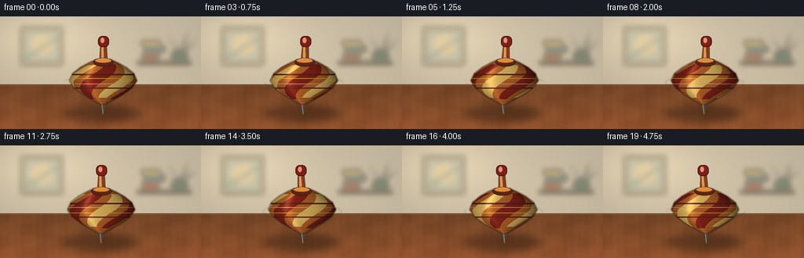
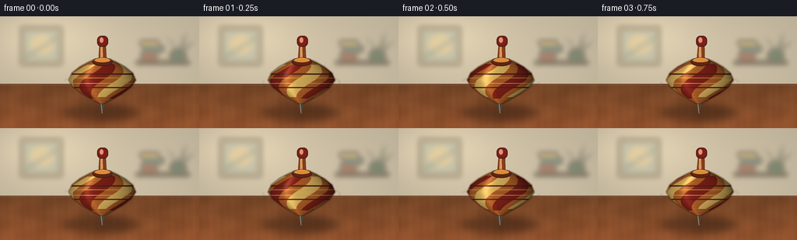

CODING AGENTS AS PIXEL WORLD MODELS
traex/GPT-5.6-Sol · instance_preservation_0037
点击播放 · 原生 RGB 像素
逐轮保存的候选
回放视频、检查图与代码变化。
每份候选均可单独播放。实际图片检查记录在下方工具轨迹中。
候选 01播放与检查图
点击播放 · 原生 RGB 像素


展开代码变化
--- 上一保存版本
+++ 本次保存版本
@@ -0,0 +1,224 @@
+from pathlib import Path
+import math
+
+import numpy as np
+from PIL import Image, ImageDraw, ImageFilter
+
+import artifact_io
+
+
+W, H, N = 256, 144, 20
+S = 4
+WW, HH = W * S, H * S
+
+
+def q(v):
+ """Scale a logical-pixel coordinate for supersampled drawing."""
+ return int(round(v * S))
+
+
+def make_background():
+ rng = np.random.default_rng(1947)
+ yy, xx = np.mgrid[0:HH, 0:WW]
+ y = yy / S
+ x = xx / S
+
+ # Cream wall with directional window light and a gentle vignette.
+ wall = np.empty((HH, WW, 3), dtype=np.float32)
+ wall[:] = (202, 191, 168)
+ glow = np.exp(-((x - 53) ** 2 / 5200 + (y - 27) ** 2 / 1500))
+ wall += glow[..., None] * np.array([27, 25, 18])
+ vignette = ((x - 128) / 170) ** 2 + ((y - 66) / 115) ** 2
+ wall -= vignette[..., None] * np.array([18, 17, 14])
+
+ # Warm walnut table starts just above the subject's widest shadow.
+ table = y >= 87
+ depth = np.maximum(0, y - 87)
+ wood = np.zeros_like(wall)
+ wood[..., 0] = 113 + 0.55 * depth
+ wood[..., 1] = 68 + 0.25 * depth
+ wood[..., 2] = 39 + 0.12 * depth
+ grain = (4.2 * np.sin(x * .082 + 1.1 * np.sin(y * .19)) +
+ 2.1 * np.sin(x * .245 + y * .032) +
+ 1.2 * np.sin(x * .67 - y * .018))
+ wood += grain[..., None] * np.array([1.00, .72, .45])
+ wall[table] = wood[table]
+ noise = rng.normal(0, .65, (HH, WW, 1))
+ wall += noise
+ wall = np.clip(wall, 0, 255).astype(np.uint8)
+ base = Image.fromarray(wall, "RGB")
+
+ # Defocused room details: shelf, framed print, books, and a small plant.
+ decor = Image.new("RGBA", (WW, HH), (0, 0, 0, 0))
+ d = ImageDraw.Draw(decor)
+ d.rounded_rectangle((q(26), q(13), q(80), q(63)), radius=q(2),
+ fill=(83, 70, 54, 105), outline=(245, 226, 191, 95), width=q(2))
+ d.rectangle((q(31), q(18), q(75), q(58)), fill=(166, 178, 163, 105))
+ d.ellipse((q(39), q(24), q(68), q(49)), fill=(228, 195, 126, 82))
+ d.line((q(32), q(53), q(74), q(27)), fill=(79, 112, 105, 70), width=q(4))
+ d.rounded_rectangle((q(174), q(57), q(244), q(62)), radius=q(2), fill=(58, 42, 31, 125))
+ d.rectangle((q(181), q(46), q(202), q(57)), fill=(125, 59, 42, 115))
+ d.rectangle((q(184), q(38), q(210), q(46)), fill=(57, 97, 95, 120))
+ d.rectangle((q(180), q(31), q(204), q(38)), fill=(193, 153, 77, 120))
+ d.ellipse((q(218), q(42), q(239), q(60)), fill=(54, 84, 64, 125))
+ # Plant leaves.
+ for pts in [
+ [(228, 44), (213, 25), (225, 38)], [(230, 44), (239, 20), (235, 39)],
+ [(227, 45), (207, 36), (222, 43)], [(232, 44), (250, 31), (238, 43)]]:
+ d.polygon([(q(a), q(b)) for a, b in pts], fill=(46, 87, 61, 115))
+ decor = decor.filter(ImageFilter.GaussianBlur(q(3.2)))
+ base = Image.alpha_composite(base.convert("RGBA"), decor)
+
+ # Table edge remains crisp enough to ground the top.
+ edge = Image.new("RGBA", (WW, HH), (0, 0, 0, 0))
+ de = ImageDraw.Draw(edge)
+ de.line((0, q(87), WW, q(87)), fill=(74, 48, 33, 110), width=q(1))
+ de.line((0, q(88), WW, q(88)), fill=(222, 177, 112, 40), width=q(1))
+ return Image.alpha_composite(base, edge)
+
+
+BACKGROUND = make_background()
+
+
+def body_layer(cx, phase, lean):
+ """Analytically shade a turned wooden body with paint rotating on its surface."""
+ yy, xx = np.mgrid[0:HH, 0:WW]
+ y = yy / S
+ x = xx / S
+ knots_y = np.array([55, 59, 65, 73, 82, 91, 100, 108, 112], np.float32)
+ knots_r = np.array([9, 18, 29, 39, 43, 37, 25, 11, 3], np.float32)
+ rad = np.interp(y, knots_y, knots_r, left=0, right=0)
+ # A leaning axis: upper portions shift slightly more than the point.
+ axis = cx + lean * (91 - y) / 44
+ u = (x - axis) / np.maximum(rad, .001)
+ mask = (y >= knots_y[0]) & (y <= knots_y[-1]) & (np.abs(u) <= 1)
+ z = np.sqrt(np.maximum(0, 1 - u * u))
+ alpha = np.arcsin(np.clip(u, -1, 1))
+
+ # Honey-colored, lathe-turned maple beneath deep colored lacquer.
+ grain = 5.5 * np.sin(y * 1.72 + 0.25 * np.sin(y * .34))
+ base = np.zeros((HH, WW, 3), np.float32)
+ base[..., 0] = 181 + grain
+ base[..., 1] = 99 + grain * .48
+ base[..., 2] = 43 + grain * .24
+
+ # Painted spiral flutes. Their changing projected position makes rotation legible.
+ spiral = 3.0 * (alpha - phase) + (y - 82) * .105
+ wave = np.sin(spiral)
+ cream = (wave > .64) & (y > 62) & (y < 104)
+ red = (wave < -.57) & (y > 61) & (y < 106)
+ base[cream] = (229, 190, 102)
+ base[red] = (133, 35, 27)
+
+ # Thin turned rings retain the traditional top silhouette.
+ rings = ((np.abs(y - 74.2) < .85) | (np.abs(y - 91.7) < .75)) & mask
+ base[rings] = np.array([91, 37, 25])
+ fine = ((np.abs(y - 79.2) < .42) | (np.abs(y - 86.3) < .42)) & mask
+ base[fine] = np.array([240, 183, 71])
+
+ # Modeled light: broad front lobe, dark rim, fixed highlight at camera-left.
+ light = .42 + .43 * z - .12 * u
+ light += .23 * np.exp(-((u + .43) / .18) ** 2) * (z ** 5)
+ light *= 1 - .13 * np.clip((y - 94) / 20, 0, 1)
+ rgb = base * light[..., None]
+ spec = 42 * np.exp(-((u + .48) / .105) ** 2) * np.exp(-((y - 73) / 17) ** 2)
+ rgb += spec[..., None] * np.array([1, .82, .55])
+
+ rgba = np.zeros((HH, WW, 4), np.uint8)
+ rgba[..., :3] = np.clip(rgb, 0, 255).astype(np.uint8)
+ rgba[..., 3] = np.where(mask, 255, 0).astype(np.uint8)
+ return Image.fromarray(rgba, "RGBA")
+
+
+def render_frame(i):
+ t = i / 4.0
+ phase = i * 1.47 + .22
+ precession = .20 + t * 1.02
+ cx = 130.0 + 1.25 * math.cos(precession)
+ lean = 2.15 * math.sin(precession)
+
+ scene = BACKGROUND.copy()
+
+ # Soft, oval contact shadow plus a smaller dense core.
+ shadow = Image.new("RGBA", (WW, HH), (0, 0, 0, 0))
+ sd = ImageDraw.Draw(shadow)
+ sd.ellipse((q(cx - 49), q(113), q(cx + 48), q(135)), fill=(24, 15, 11, 95))
+ sd.ellipse((q(cx - 22), q(118), q(cx + 24), q(130)), fill=(20, 13, 10, 105))
+ shadow = shadow.filter(ImageFilter.GaussianBlur(q(5.0)))
+ scene = Image.alpha_composite(scene, shadow)
+
+ # Fast, translucent elliptical streaks at the equator.
+ streak = Image.new("RGBA", (WW, HH), (0, 0, 0, 0))
+ st = ImageDraw.Draw(streak)
+ box = (q(cx - 50), q(75), q(cx + 50), q(94))
+ offset = math.degrees(phase) % 360
+ st.arc(box, int(offset + 7), int(offset + 100), fill=(248, 210, 137, 55), width=q(1.15))
+ st.arc(box, int(offset + 182), int(offset + 277), fill=(69, 28, 22, 50), width=q(1.0))
+ streak = streak.filter(ImageFilter.GaussianBlur(q(.65)))
+ scene = Image.alpha_composite(scene, streak)
+
+ # Metal point, drawn first so it tucks naturally behind the wooden body.
+ parts = Image.new("RGBA", (WW, HH), (0, 0, 0, 0))
+ p = ImageDraw.Draw(parts)
+ tipx = cx - lean * .49
+ p.polygon([(q(tipx - 4.2), q(106)), (q(tipx + 4.0), q(106)),
+ (q(tipx + .9), q(124.1)), (q(tipx - .65), q(124.6))],
+ fill=(73, 68, 61, 255))
+ p.line((q(tipx - 1.5), q(109), q(tipx - .1), q(123.2)), fill=(210, 190, 157, 190), width=q(.7))
+
+ # Dark outline under the body gives separation without a cartoon contour.
+ body = body_layer(cx, phase, lean)
+ silhouette = body.getchannel("A").filter(ImageFilter.MaxFilter(9))
+ outline = Image.new("RGBA", (WW, HH), (47, 25, 17, 0))
+ outline.putalpha(silhouette.point(lambda a: 92 if a else 0))
+ scene = Image.alpha_composite(scene, parts)
+ scene = Image.alpha_composite(scene, outline)
+ scene = Image.alpha_composite(scene, body)
+
+ # Collar, spindle, and red knob follow the same gently leaning axis.
+ top = Image.new("RGBA", (WW, HH), (0, 0, 0, 0))
+ d = ImageDraw.Draw(top)
+ def ax(y):
+ return cx + lean * (91 - y) / 44
+
+ # Spindle polygon.
+ d.polygon([(q(ax(34)-4), q(34)), (q(ax(34)+4), q(34)),
+ (q(ax(58)+5.4), q(59)), (q(ax(58)-5.4), q(59))],
+ fill=(128, 61, 29, 255), outline=(72, 35, 23, 255))
+ d.polygon([(q(ax(35)-2.6), q(35)), (q(ax(35)-.3), q(35)),
+ (q(ax(57)+.8), q(57)), (q(ax(57)-2.7), q(57))],
+ fill=(221, 134, 60, 175))
+ # Wooden collar.
+ d.ellipse((q(ax(58)-13), q(53), q(ax(58)+13), q(64)), fill=(91, 38, 23, 255), outline=(62, 28, 20, 255), width=q(1))
+ d.ellipse((q(ax(58)-10), q(54), q(ax(58)+10), q(59)), fill=(221, 139, 55, 255))
+ # Lacquered grip/knob.
+ d.rounded_rectangle((q(ax(30)-7), q(25), q(ax(30)+7), q(39)), radius=q(5.5),
+ fill=(125, 31, 25, 255), outline=(65, 22, 20, 255), width=q(1))
+ d.ellipse((q(ax(30)-3.8), q(27), q(ax(30)+1.0), q(34)), fill=(232, 107, 75, 140))
+ # Tiny bright rim on the collar.
+ d.arc((q(ax(58)-11), q(53.5), q(ax(58)+11), q(62)), 192, 337,
+ fill=(250, 181, 84, 190), width=q(.75))
+ scene = Image.alpha_composite(scene, top)
+
+ # Contact glint and a minute reflected highlight on the table.
+ glint = Image.new("RGBA", (WW, HH), (0, 0, 0, 0))
+ gd = ImageDraw.Draw(glint)
+ gd.ellipse((q(tipx-1.5), q(123), q(tipx+1.8), q(125.3)), fill=(245, 205, 139, 100))
+ glint = glint.filter(ImageFilter.GaussianBlur(q(.8)))
+ scene = Image.alpha_composite(scene, glint)
+
+ # Final optical softening from supersampling, with a subtle warm grade.
+ frame = scene.convert("RGB").resize((W, H), Image.Resampling.LANCZOS)
+ arr = np.asarray(frame).astype(np.float32)
+ arr[..., 0] *= 1.015
+ arr[..., 2] *= .985
+ return np.clip(arr, 0, 255).astype(np.uint8)
+
+
+def main():
+ frames = np.stack([render_frame(i) for i in range(N)], axis=0)
+ artifact_io.save(frames, Path(__file__).resolve().parent)
+
+
+if __name__ == "__main__":
+ main()
可观测工具轨迹
实际执行的命令与返回图片。
命令 1exit 0
/bin/bash -lc "cat prompt.txt && printf '\\n---RULES---\\n' && cat GENERATION_RULES.md && printf '\\n---SPEC---\\n' && cat task_spec.json"
命令 2exit 0
/bin/bash -lc "find . -maxdepth 2 -type f -printf '%p\\n' | sort"
命令 3exit 0
/bin/bash -lc 'cat artifact_io.py'
命令 4exit 0
/bin/bash -lc 'python generate.py'
命令 5exit 0
/bin/bash -lc "python - <<'PY'
import numpy as np
from pathlib import Path
p=np.load('pixels.npz')['pixels']
print('pixels',p.shape,p.dtype,'frames:',len(list(Path('frames').glob('*.png'))))
print('frame pixel deltas', [int(np.count_nonzero(p[:,:,i]"'!=p[:,:,i-1])) for i in range(1,20)])
print('"'artifacts',[(x.name,x.stat().st_size) for x in map(Path,['pixels.npz','index.html','inspection.png','transition_check.png','generate.py'])])
PY"视觉工具实际返回图片 1

视觉工具实际返回图片 2

保存候选 1 份；完成命令 5 次；可验证图片返回 2 张。原始 API 响应与完整日志保留在本地。